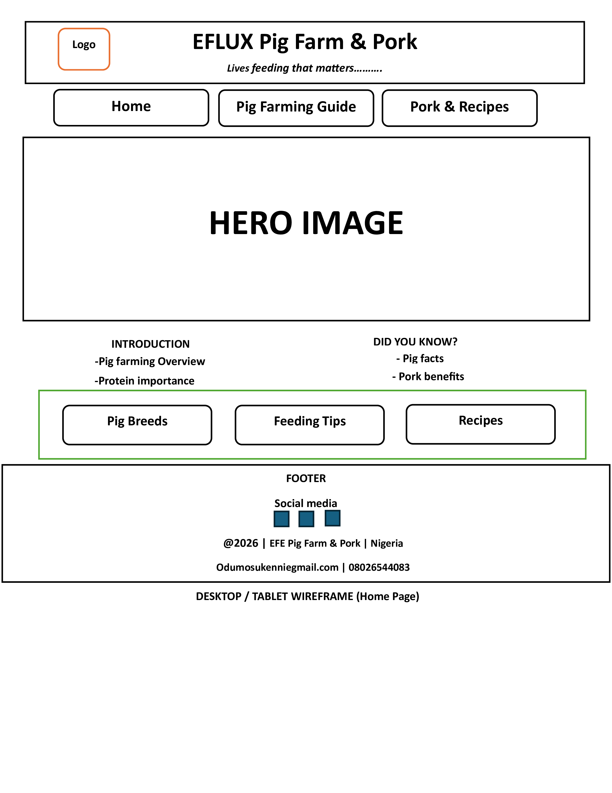
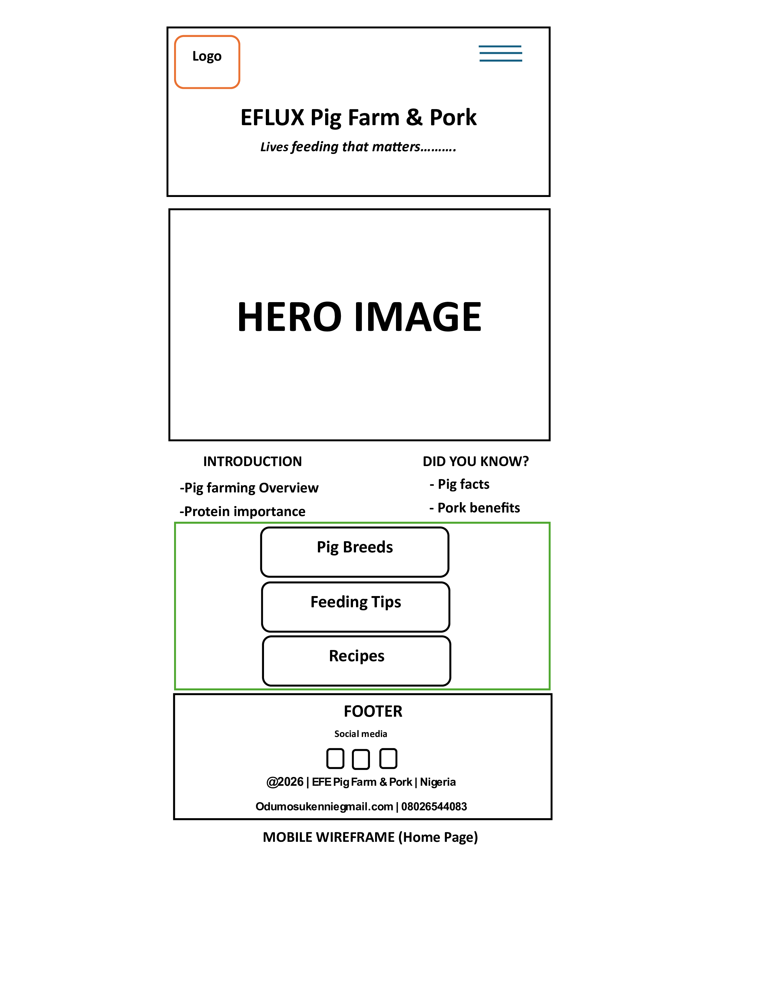

Site Name
Eflux Pig Farm & Pork
The name reflects professionalism in pig farming while clearly indicating the focus on pork production and supply.
Site Purpose
This website provides educational and practical information on pig farming and the pork supply chain. It supports farmers, students, and consumers by sharing best practices, nutrition insights, and local market resources.
Planned Pages
- Home / Introduction
- Pig Farming Guide
- Pork Supply & Recipes
Target Audience
- Small- and medium-scale pig farmers
- Agricultural students and beginners
- Consumers interested in pork nutrition
Scenarios
- What pig breed is best for meat production?
- How can I reduce feeding costs while improving pig growth?
- Where can I find reliable local pork suppliers?
- What are simple and nutritious pork recipes?
Color Scheme
- Dark Green (#2E7D32): Headings, navigation, footer
- Light Beige (#F5F5DC): Background
- Brown (#6D4C41): Accents and highlights
Typography
- Poppins: Headings and navigation
- Open Sans: Body text
Wireframe
Below are simple sketches for the home page layout in both mobile and desktop views.
Desktop View: The desktop wireframe includes a horizontal navigation bar, a wide hero image, a two-column layout for introduction and facts, featured content sections, and a footer.
Mobile View: Header, menu, hero image, intro text, facts section, footer. The mobile wireframe uses a single-column layout with a header, navigation menu, hero image, introduction content, facts section, and footer stacked vertically.
Desktop Wireframe

Mobile Wireframe
